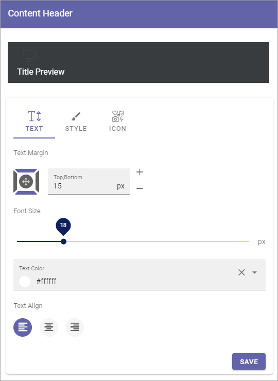
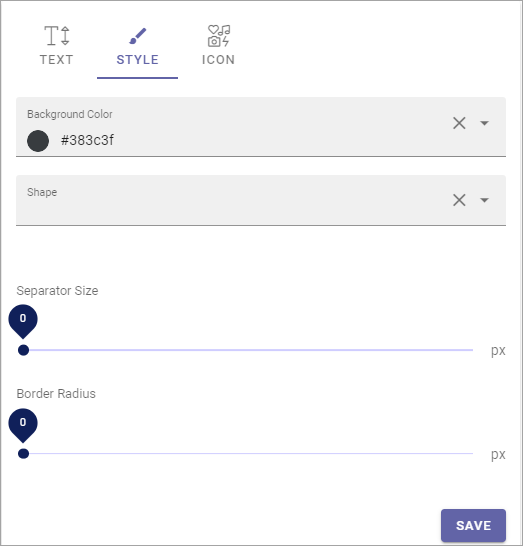
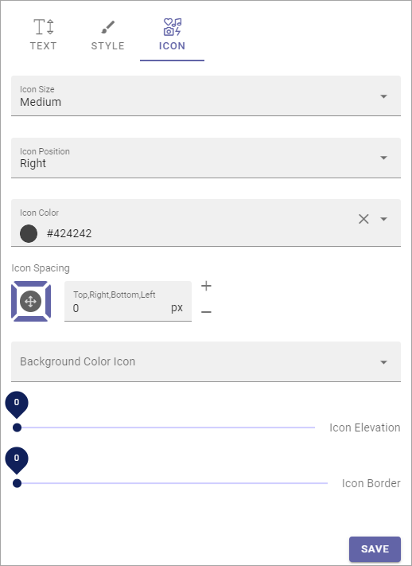

Content Header (Business Profile)¶
Use these options to set a default setting for Block Headings and Section Headings. Authors can edit these settings when working with blocks and sections, if needed.
- Title Preview: Here you see a Preview when you make changes.
Text¶
Available settings for Text are the following (as seen in the image above):
- Text Margin: Set the Margin from the text to the border of the header.
- Font Size: Use the slider to set the Size of the text here.
- Text Color: Set the Text Color here.
- Text Align: The Header Text can be aligned left, right or middle, within the header.
Style¶
You can use these settings for Style:
If you make changes, you can see a preview of them at the top.
- Background Color: You can set a default background color here, for the Content Header.
- Shape: You can also add a shape from the list, if you wish.
- Separator Size: This is spacing in pixels below the Heading Area (meaning, not just the text, but the whole Header).
- Border Radius: Use this slider to set rounded corners. It affects the top left and top right corners.
Icon¶
Here you can edit default settings for icons, when icons are used in a Block or Region Heading.
- Icon Size: The size of the icon can be set to Small, medium, Large or Extra Large.
- Icon Position: Position can be Left, Top Left, Right or Top Right.
- Icon Color: A color for the icon can be set here.
- Icon Spacing: If you need some spacing around the icon, set it here.
- Background Color Icon: If needed, you can set a background color for the icon.
- Icon Elevation: Use the slider to set an Icon Elevation, if you want that.
- Icon Border: Use the slider to add an Icon Border, if you want that.